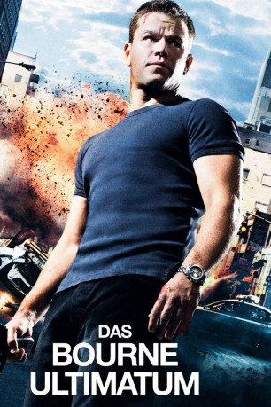

Auszeichnungen: 3 Oscars gewonnen 2 BAFTA-Awards gewonnen
 gesehen am 24.07.2015
gesehen am 24.07.2015Alternativ: The Bourne Ultimatum
Auszeichnungen: 3 Oscars gewonnen 2 BAFTA-Awards gewonnen gesehen am 24.07.2015
 
 IMDB-Wertung: 8.0 / 10
IMDB-Wertung: 8.0 / 10  Metascore:
Metascore: 
Um das dunkle Kapitel seiner Vergangenheit endlich auszulöschen, muss Jason Bourne sich dieser stellen. Das Projekt, welches ihn erschuf, wird auch weiterhin illegal fortgesetzt. Bourne macht sich daran, den Mord an seiner Freundin zu rächen. Unterstützt wird er dabei von Nicki, einer ehemaligen Agentin und der CIA-Agentin Landy. Doch auch der CIA-Chef Vosen hat seine Killer schon auf Bourne angesetzt, damit alle Gefahren für die Weiterführung des Projekts beseitigt werden.
Jahr: 2007
Dauer: 115 Minuten
FSK: 12
Land: USA Studio: Universal PicturesTonspuren: DD5.1 - ,
Untertitel: Deutsch,
Auflösung: 1080p (1920x800) Größe: 9216 MB
Regisseur: Paul Greengrass
Drehbuch: Tony Gilroy, Scott Z. Burns, George Nolfi, Tony Gilroy, Robert Ludlum
Soundtrack: John Powell
Darsteller:
 Matt Damon als Jason Bourne
Matt Damon als Jason Bourne Julia Stiles als Nicky Parsons
Julia Stiles als Nicky Parsons David Strathairn als Noah Vosen
David Strathairn als Noah Vosen Scott Glenn als Ezra Kramer
Scott Glenn als Ezra Kramer Paddy Considine als Simon Ross
Paddy Considine als Simon Ross Édgar Ramírez als Paz
Édgar Ramírez als Paz Albert Finney als Dr. Albert Hirsch
Albert Finney als Dr. Albert Hirsch Joan Allen als Pam Landy
Joan Allen als Pam Landy Tom Gallop als Tom Cronin
Tom Gallop als Tom Cronin Corey Johnson als Wills
Corey Johnson als Wills Daniel Brühl als Martin Kreutz
Daniel Brühl als Martin Kreutz Joey Ansah als Desh
Joey Ansah als Desh Colin Stinton als Neal Daniels
Colin Stinton als Neal Daniels Scott Adkins als Agent Kiley
Scott Adkins als Agent Kiley Branko Tomovic als Russian Policeman
Branko Tomovic als Russian Policeman Trevor St. John als Tactical Team Leader
Trevor St. John als Tactical Team Leader Albert Jones als Tactical Team Agent
Albert Jones als Tactical Team Agent Uriel Emil als Morgue Attendant
Uriel Emil als Morgue Attendant Michael Wildman als CRI Agent
Michael Wildman als CRI Agent David Boston als Businessman on Street , uncredited
David Boston als Businessman on Street , uncredited Brian Cox als Ward Abbott , archive footage, uncredited
Brian Cox als Ward Abbott , archive footage, uncredited Sebastian Feldman als Buenos Aires Cafe Patron , uncredited
Sebastian Feldman als Buenos Aires Cafe Patron , uncredited Ilan Krigsfeld als Decoy Bystander , uncredited
Ilan Krigsfeld als Decoy Bystander , uncredited Kirk Lambert als Attorney , uncredited
Kirk Lambert als Attorney , uncredited Franka Potente als Marie Kreutz , archive footage, uncredited
Franka Potente als Marie Kreutz , archive footage, uncredited Brian Smyj als Agent , uncredited
Brian Smyj als Agent , uncredited John Warman als Policeman , uncredited
John Warman als Policeman , uncreditedDatei: X:\5-Pentalogie(A-Z)\Bourne\Bourne 3 - Ultimatum, Das (2007, FSK12, 1920x800).mkv seit 13.07.2015
Festplatte: HD Collection-3(N-Z)-6(A-Z)
 Es gibt insgesamt 8 Filme in der Gruppe '5-Pentalogie(A-Z)\Bourne'
Es gibt insgesamt 8 Filme in der Gruppe '5-Pentalogie(A-Z)\Bourne'